Module 3 — Symbols | Pages 255–276
4.
On the toolbar at the top, click the Canvas Zoom drop-down list, and select 75%.
The canvas resizes to 75%.
5.
On the canvas, right-click the graphic and select Duplicate.
6.
Place the duplicate to the right of the original.
7.
On the canvas, right-click the duplicate and select Industrial Graphic | Select Alternate
Instance.
The Galaxy Browser appears. The Instances list is filtered to show only the instances where
this graphic is available.
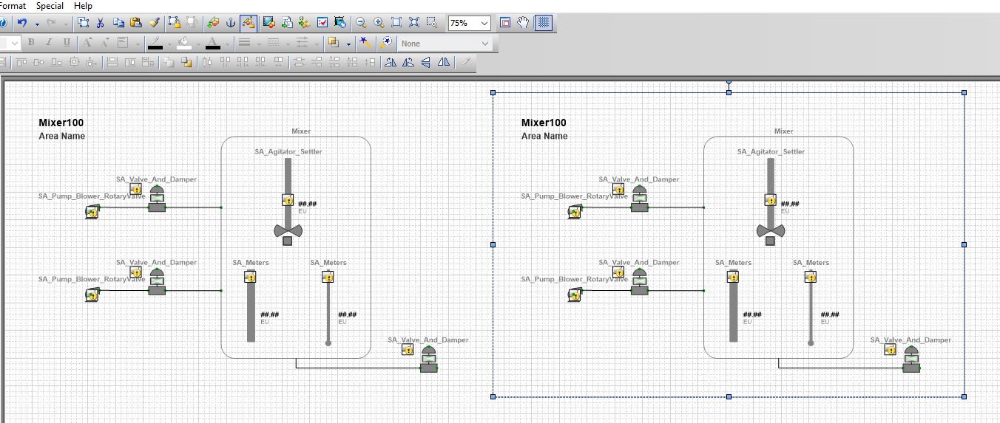
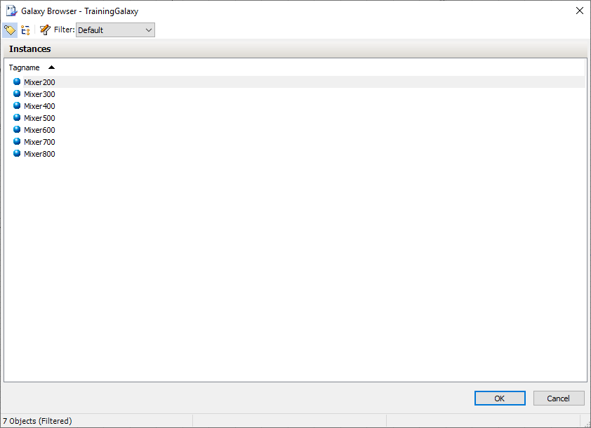
8.
In Instances, double-click Mixer200.
On the canvas, the duplicate now reflects the Mixer200 name.
9.
Right-click the canvas to set focus on the canvas and then select Select All.
10. On the canvas, right-click the selection and select Duplicate.
11. Place the duplicates below the originals.
12. In a blank area of the canvas, click to deselect all, and then select the bottom-left graphic.
13. Right-click the selection and select Industrial Graphic | Select Alternate Instance.
14. In Instances, double-click Mixer300.
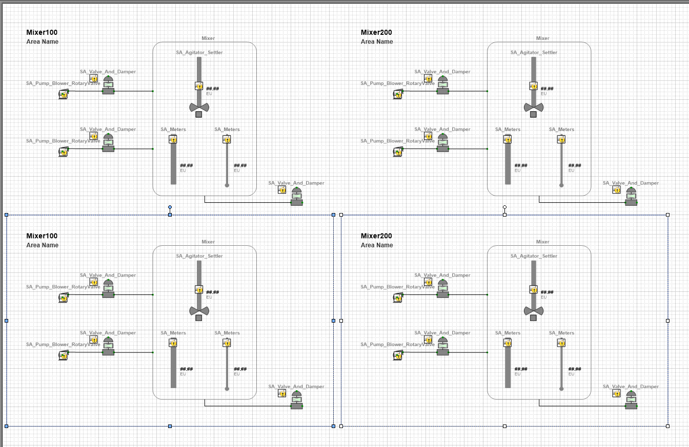
15. For the final graphic on the canvas, change its instance to Mixer400,
The canvas displays one graphic for each unique instance of the mixer.
16. On the canvas, select the top-left graphic, and then press and hold Shift and click the graphic
to the right.
17. On the Alignment toolbar, select Align Top.
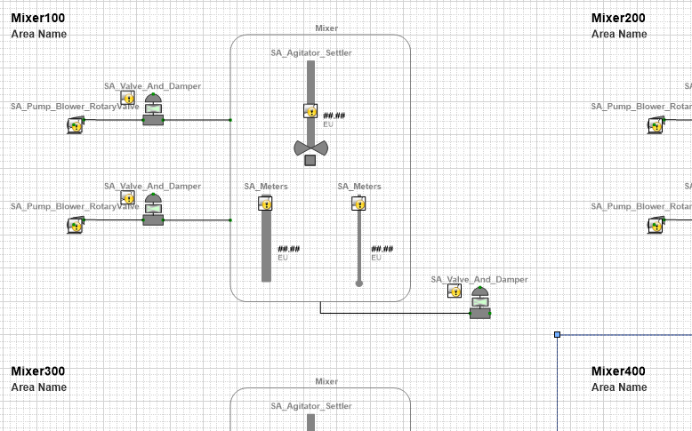
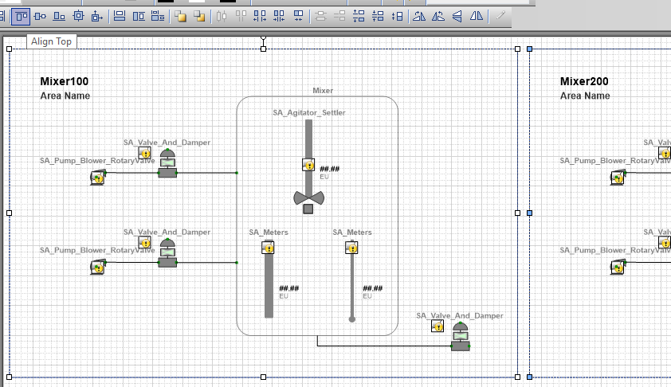
18. Click the canvas to deselect the selections and then select both of the bottom graphics.
19. On the Alignment toolbar, select Align Bottom.
20. Select the two graphics on the left, and then select Align Left.
21. Select the two graphics on the right, and then select Align Right.
22. Save and close and check in the graphic.
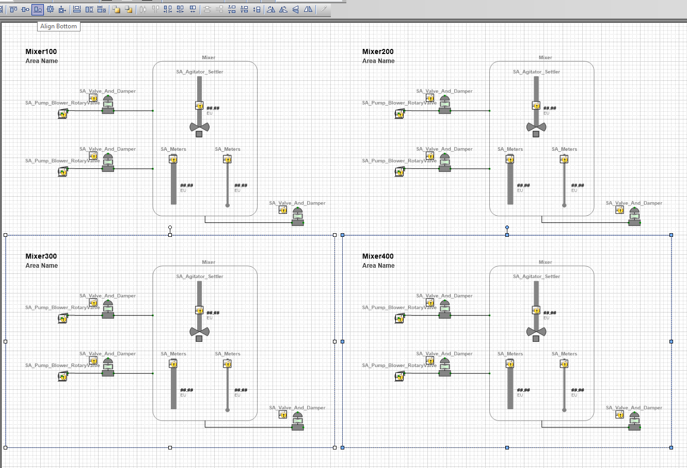
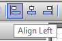
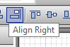
23. On the Graphics tab, in the Training toolset, create a new symbol named
Line2_MixingProcess, and then open it for editing.
24. In Tools, select Rectangle, and then on the canvas, click and drag diagonally to draw a
rectangle.
25. On the Properties tab, configure properties as follows:
Your canvas should look similar to the following:
26. Right-click the canvas to set focus on the canvas and then select Custom Properties.
27. Add a custom property named ShowTrigger, and then change the Data Type to String.
Name:
MixerDisplay
Width:
1490
Height:
670
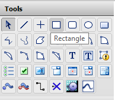
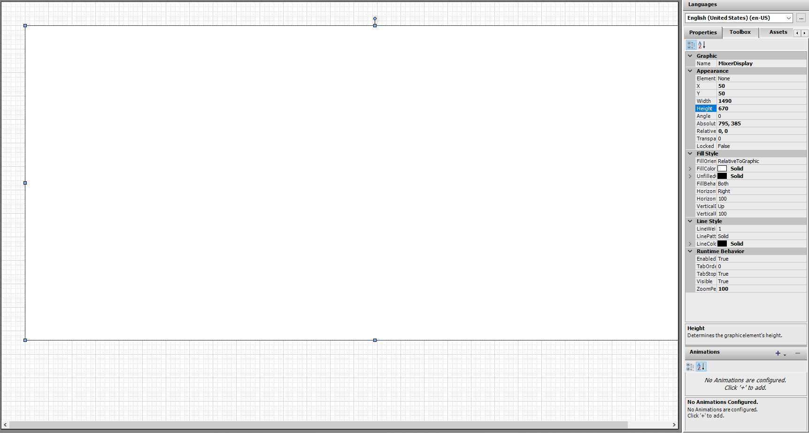
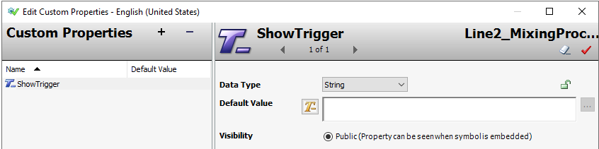
28. Click OK to close Edit Custom Properties.
29. Right-click the canvas to set focus on the canvas and then select Scripts.
Edit Scripts appears.
30. In the Predefined Scripts pane, in the type drop-down list, select On Hide.
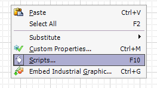
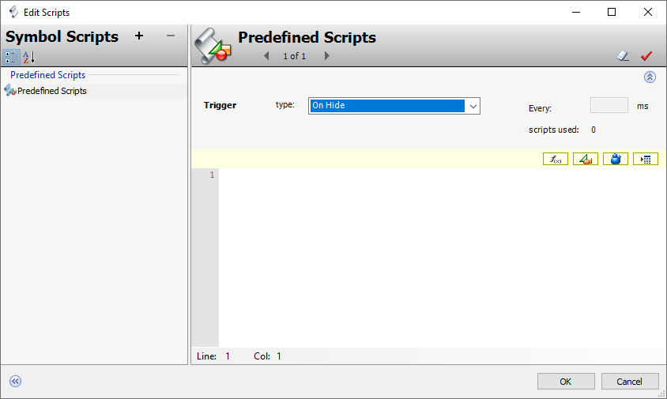
31. In the script body, enter the following:
Note:
You may use the applicable portion of the script in C:\Training\Lab 10 - Creating a
Navigation Symbol.txt.
'Hide all graphics before displaying new graphics.
dim i as integer;
for i = 5 to 8
'Hide all displayed graphics.
'Identities: View1, View2, View3, View4.
HideGraphic( "View" + StringFromIntg(i, 1) );
next;
32. In Edit Scripts, click Add Script to add a Named script.
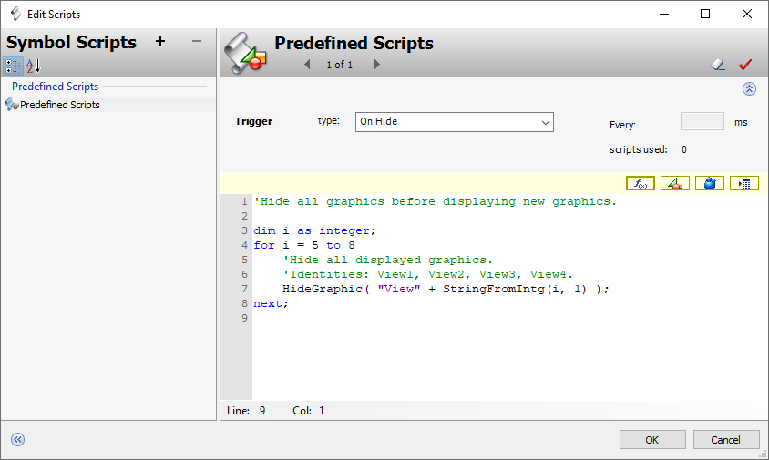
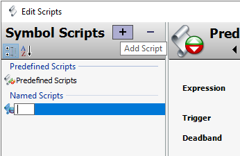
33. Name the script ShowMixer.
34. In Expression, enter ShowTrigger.
35. In the Trigger drop-down list, select DataChange.
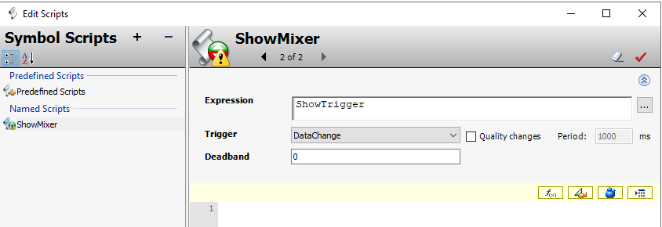
36. In the script body, enter the following:
Note:
You may use the applicable portion of the script in C:\Training\Lab 10 - Creating a
Navigation Symbol.txt.
'Show 4 Mixer display using ShowGraphic() function.
dim i as integer;
dim graphicInfo as aagraphic.GraphicInfo;
for i = 5 to 8
'Identities: View1, View2, View3, View4.
graphicInfo.Identity = "View" + StringFromIntg(i, 1);
graphicInfo.GraphicName = "Mixer" + StringFromIntg(i, 1) +
"00.MixingProcess_Detail";
'Customize the look and feel of the graphic.
graphicInfo.HasTitleBar = false;
graphicInfo.HasCloseButton = false;
'Customize the size of the graphic.
graphicInfo.RelativeTo = aaGraphic.RelativeTo.CustomizedWidthHeight;
graphicInfo.Width = (MixerDisplay.Width)/2;
graphicInfo.Height = (MixerDisplay.Height)/2;
'Customize the position of the graphic.
graphicInfo.WindowLocation = aaGraphic.WindowLocation.TopLeftCorner;
graphicInfo.WindowRelativePosition =
aaGraphic.WindowRelativePosition.ClientAreaXY;
if (i == 5) then
graphicInfo.X = MixerDisplay.X;
graphicInfo.Y = MixerDisplay.Y;
elseif (i == 6) then
graphicInfo.X = MixerDisplay.X + (MixerDisplay.Width)/2;
graphicInfo.Y = MixerDisplay.Y;
elseif (i == 7) then
graphicInfo.X = MixerDisplay.X;
graphicInfo.Y = MixerDisplay.Y + (MixerDisplay.Height)/2;
elseif (i == 8) then
graphicInfo.X = MixerDisplay.X + (MixerDisplay.Width)/2;
graphicInfo.Y = MixerDisplay.Y + (MixerDisplay.Height)/2;
endif;
'Show graphic.
ShowGraphic( graphicInfo );
next;
37. Click OK to close Edit Scripts.
38. Save and close and check in the graphic.
Create a Navigation Button
Next, you will create a button that can be used to display specific graphics.
39. On the Graphics tab, in the Training toolset, create a symbol named NavigationButton, and
then open it for editing.
40. Right-click the canvas to set focus on the canvas and then select Custom Properties.
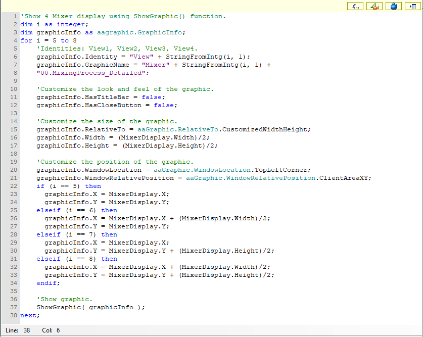
41. Add a custom property named GetButtonText and configure it as follows:
42. Create four more custom properties and configure them as follows:
Note:
For the String custom properties, you will leave the Default Value area Static Text
and the field blank for now, as you will be filling this in later in the lab.
43. Click OK to close Edit Custom Properties.
Data Type:
String
Default Value:
‘Expression Or Reference’ mode:
---
Description:
Use to get text from the button that is currently clicked
Name
Data Type
GraphicName
String
WindowModal
Boolean (default)
WindowName
String
WindowResizable
Boolean (default)
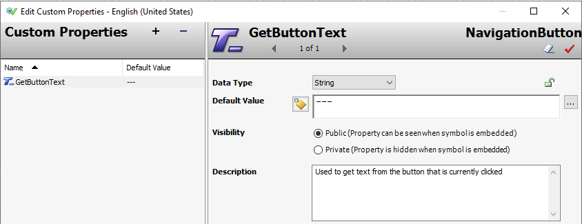
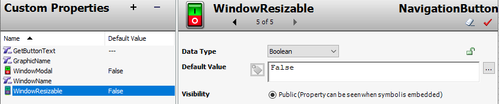
44. On the canvas, add a Button and configure it as follows:
I
45. Double-click the button and add an Action Scripts animation.
Name:
Mixer_Btn
ElementStyle:
Intensity2
Width:
100 (recommended)
Height:
50 (recommended)
Text:
Label
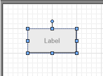
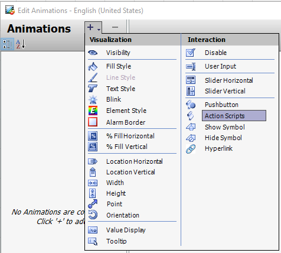
46. In the type drop-down list, ensure On Left/Key/Touch Up is selected.
47. In the script body, enter the following:
Note:
You may use the applicable portion of the script in C:\Training\Lab 10 - Creating a
Navigation Symbol.txt.
dim graphicInfo as aaGraphic.GraphicInfo;
GetButtonText = Text;
' Identity is targeting an InTouch window.
if (WindowName <> "") then
' Targeting an InTouch window.
graphicInfo.Identity = "InTouch:" + WindowName;
else;
' Not targeting an InTouch window.
' Use the name of the graphic as the identity.
graphicInfo.Identity = GraphicName;
endif;
' The graphic name is ignored if calling a legacy InTouch window.
graphicInfo.GraphicName = GraphicName;
' Check if window should be modal.
if (WindowModal) then
graphicInfo.WindowType = aaGraphic.WindowType.Modal;
endif;
' Check if window should be resizable.
graphicInfo.Resizable = WindowResizable;
' Show graphic.
ShowGraphic( graphicInfo );
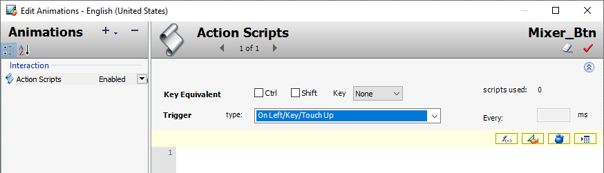
48. Add a Disable animation.
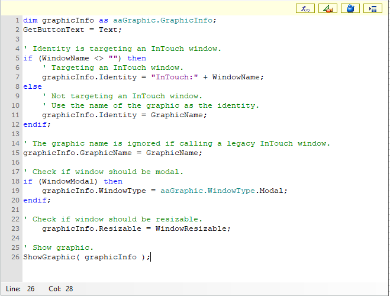
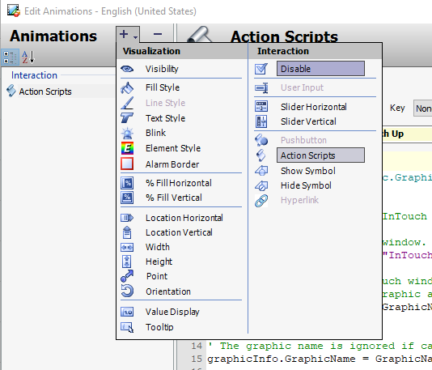
49. In States, select Boolean.
50. In Expression Or Reference, enter GetButtonText == Text.
51. In Disabled When Expression is, ensure True, 1, On is selected.
52. Add an Element Style animation.
53. Configure the animation as follows:
54. Click OK to close Edit Animations.
55. Save and close and check in the graphic.
States:
Boolean
Expression Or Reference:
GetButtonText == Text
True, 1, On:
Element Style: checked (default)
Intensity4 selected
False, 0, Off:
Element Style: unchecked
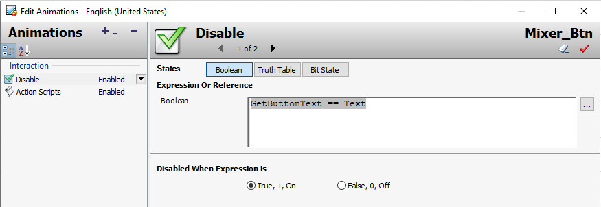
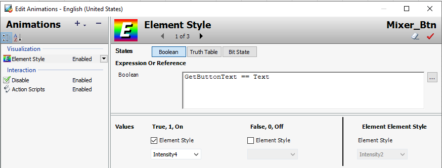
Create the System Navigation Symbol
Now, you will create a symbol for the reusable Navigation Buttons that you just created. At
runtime, you will be able to click these buttons to display different windows.
56. On the Graphics tab, in the Training toolset, create a new symbol named
SystemNavigation, and then open it for editing.
57. Add a custom property named LastButton with a Data Type of String.
58. Embed the NavigationButton graphic.
59. Change the string on the button to Mixers.
60. Configure the custom properties of the Mixers button as follows:
61. Duplicate the button and place the duplicate to the right of the original.
62. Change the string on the duplicate to Line 1.
GetButtonText:
LastButton
GraphicName:
Mixer100.SwitchedMixingProcess
WindowName:
ContentDisplay
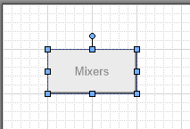
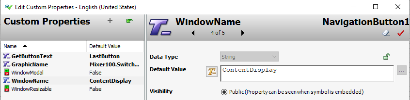
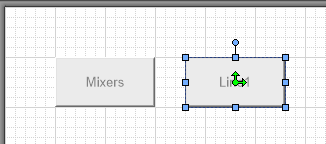
63. For the Line 1 button, change the GraphicName custom property to Line1_MixingProcess.
64. Duplicate the Line 1 button, change its string to Line 2, and change its GraphicName custom
property to Line2_MixingProcess.
65. Save and close and check in the graphic.
Test in Runtime
Finally, you will place the newly created SystemNavigation symbol in the Navigation window and
test the buttons created in the symbol.
Important: The following steps require the runtime resolution be 1920 x 1080. If you are making a
remote connection to a virtual machine, be sure the display is set to Full Screen. The results with
any other resolution will vary. This is due to a Microsoft popup window behavior that prevents a
window from appearing partially off screen. If this happens, Microsoft will move the popup window
to fit inside the visible screen area, which can cause graphics to overlap.
66. In WindowMaker, in the Navigation window, embed the SystemNavigation symbol.
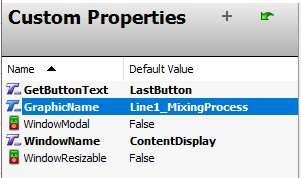
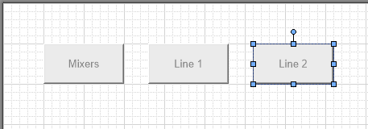
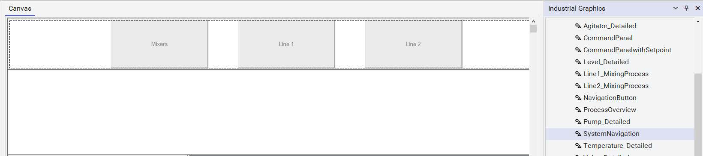
67. Click Runtime.
68. In WindowViewer, in the Navigation window, click the Line 1 button.
The Line 1 button indicates it is selected and the first four mixers appear.
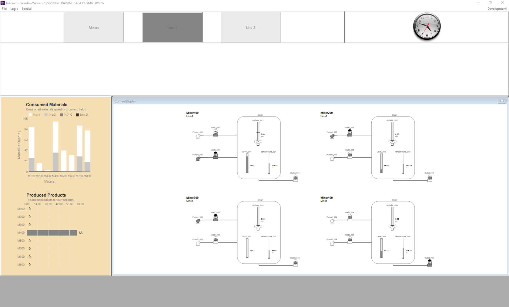
69. In the Navigation window, click the Line 2 button.
The Line 2 button indicates it is selected and the last four mixers appear.
The mixers shown here are actually four pop up windows with no border, title bar, or close
button. Their position gives the illusion they are part of the ContentDisplay window when
actually they are floating on top of WindowViewer. When navigating away from the Line 2
popup windows, the On Hide script you added to the Line2_MixingProcess graphic will close
these popup windows.
70. Click Development! to return to WindowMaker.
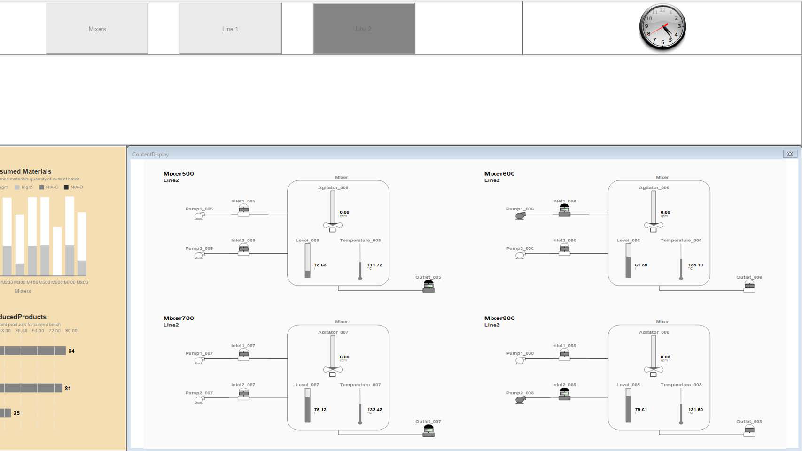
Introduction
A Galaxy Style applies visual and numerical styles to the presentation of graphics. Styles provide a
means for developers to establish consistent visual standards in the presentation of the
applications. A Galaxy Style includes visual overrides for Quality & Status, HMI Element, Alarm
Element, Trend Element, User defined, and Format styles.
You can view the Galaxy Styles available to a Galaxy, as well as manage and configure them, in
the Configure Galaxy Styles area. To open it, from the Galaxy menu, select Configure | Galaxy |
Styles. Predefined styles cannot be deleted and new styles cannot be added to a Galaxy Style list.
The Styles area lists each style as a card. Each card gives access to all available overrides.
By default, the Standard_Style is provided, and it is set as the active style for the Galaxy. You can
add and configure additional styles, designate a different active style, delete styles, duplicate
styles, and more from the configuration area.
This section explains how to work with Galaxy Styles.
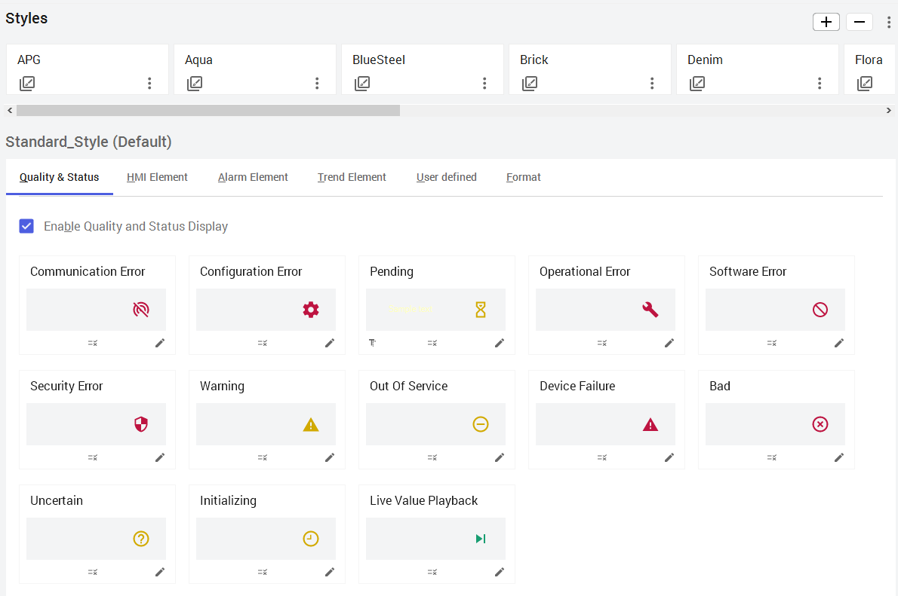
Quality & Status Styles
Quality & Status styles can be used to provide visual elements specific to quality and status states
at runtime. You can configure text, fill, outline, blink, and associated display icons for
communication errors, configuration errors, warnings, bad quality, security errors, and more.
In the configuration area, the Quality & Status tab shows the visual overrides for quality and status.
HMI Element Styles
An HMI Element style defines a set of visual properties that determine the appearance of text,
lines, outlines, and fills of elements shown in symbols. The list of visual overrides for these
elements are shown on the HMI Element Styles tab. Each override specifies a preconfigured visual
property that takes precedence over the native visual properties for an element.
You modify properties by setting overrides on the HMI Element Styles tab.
Text: These properties modify the appearance of text by setting overrides for text font,
size, style, color, and blink settings.
Fill: These properties modify the appearance of graphic fills by setting overrides for fill
color and blink settings.
Line: These properties modify the appearance of lines by setting overrides for patterns,
weight, color, and blink settings.
Outline: These properties modify the appearance of outlines by specifying whether
outlines are shown.
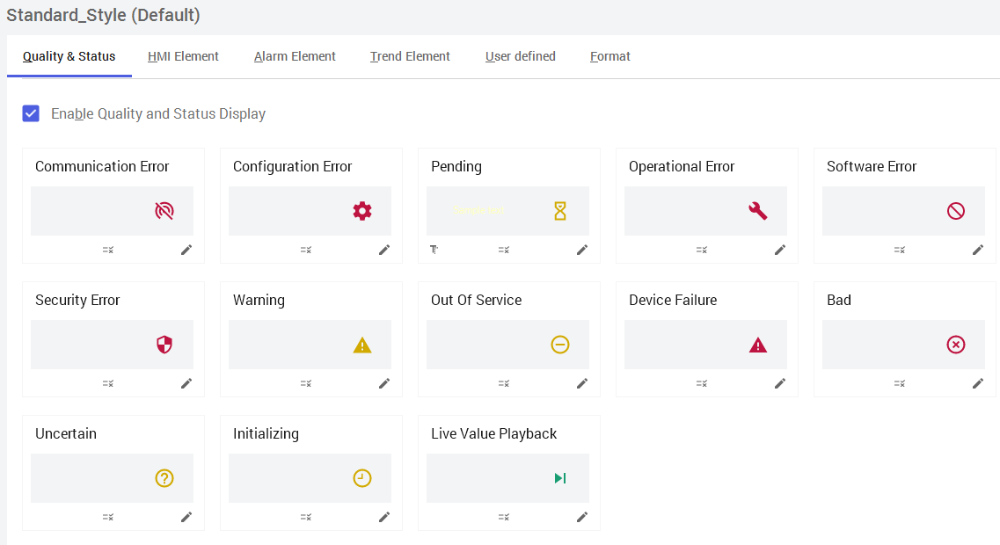
Review the sections above for the main topics, step-by-step procedures, and important configuration details.
This is part of the InTouch HMI layer, which integrates with Application Server's Galaxy for a complete visualization solution.
Module 3 — Symbols. AVEVA InTouch for System Platform 2023 Training.
Next: Lesson L22 — Galaxy Styles